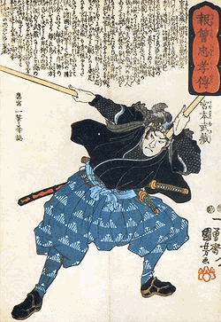

<section>
	<div class="container">
		<h2>
			Musashi Miyamoto
		</h2>
		<div class="row">
			<div class="col-sm-2">
			
			</div>

			<div class="col-sm-10">
				  <p>

        <strong>Musashi Miyamoto was een legendarische Samoerai die de stijl van de 2 zwaarden

            ontwierp. In Japan is hij een legende waar talloze boeken en films over gemaakt

            zijn. Hij was berucht om zijn vechtstijl en beroemd om zijn boeken, geschriften

            en kaligrafie&euml;n. Zijn bekendste boek is het &quot;Go rin no sho&quot;, het

            &quot;Boek van de 5 ringen&quot; en handelt over krijgskunst en strategie. </strong>

    </p>

    <p>

        Musashi werd geboren in het dorp Miyamoto in de provincie Mimasaka. Na het overlijden

        van zijn vader en moeder werd de jonge Musashi toevertrouwd aan de zorg van een

        oom van zijn moeders kant, een boeddhistische priester. Hij had een sterke wil en

        was groot voor zijn leeftijd.</p>    

			</div>

		</div>		

	<p>

        Toen hij dertien was doodde hij zijn eerste tegenstander, Arima Kihei, een samurai

        van de Shinto Ryu School voor krijgskunde. Musashi's volgende gevecht was op zestienjarige

        leeftijd toen hij Tadashima Akiyama versloeg. In die tijd verliet hij zijn huis

        om een &quot;Pelgrimstocht van de samurai&quot; te maken, die hem talloze overwinningen

        bezorgde en hem zes maal in een oorlog deed belanden. Op dertigjarige leeftijd had

        hij al meer dan zestig gevechten gewonnen en werd door iedereen als onoverwinnelijk

        beschouwd.&nbsp;&nbsp;</p>

    <p>

    <p>

        In de tijd dat Musashi rondzwierf, besteedde hij al zijn tijd aan het zoeken naar

        verlichting door de weg van het zwaard. Hij zwierf door Japan, en verzaakte zoveel

        mogelijk wereldse en materi&euml;le dingen. Zo doorstond hij in lichte kleding winterse

        stormen, kamde zijn haar niet en zocht niet naar een vrouw. Het enige wat voor hem

        telde was&nbsp; zijn studie.&nbsp;

    </p>

    <p>

        Musashi's meest bekende duel vond plaats in 1612, toen hij in Ogura in de provincie

        Bunzen was. Zijn tegenstander was Sasaki Kojiro, een jonge man die een krachtige

        zwaardtechniek had ontwikkeld die bekend stond onder de naam Tsubame-gaehi (zwaluw

        slag).&nbsp;

    </p>

    <p>

        Het gevecht duurde niet lang en Musashi kwam wederom als overwinnaar uit de strijd.

    </p>

    <p>

        Volgens zijn eigen aantekeningen begon hij op vijftigjarige leeftijd de strategie

        van de krijgskunst te begrijpen. Op vijftigjarige leeftijd toen hij voor zijn gevoel

        aan het eind gekomen was van zijn zoektocht naar de oorzaak der dingen, ging hij

        een teruggetrokken leven leiden.

    </p>

    <p>

        Zijn laatste jaren besteedde Musashi aan lesgeven en schilderen. In 1643 trok hij

        zich in afzondering terug in een grot die &quot;Reigendo&quot; genoemd werd. &nbsp;Hier

        schreef hij in een paar weken voor zijn dood op negentien mei 1645, <strong>Go Rin No

            Sho</strong> (Het boek van de vijf Ringen).

    </p>

    <p>

        Voor Japanners staat Musashi bekend onder de naam &quot;<strong>Kensei</strong>&quot;,

        wat zwaardheilige betekent.

    </p>

    <p>

        Het boek van de vijf Ringen wordt niet alleen gelezen door beoefenaars van kendo,

        maar is toepasbaar op alle aspecten van het leven.</p>


	</div>
</section>